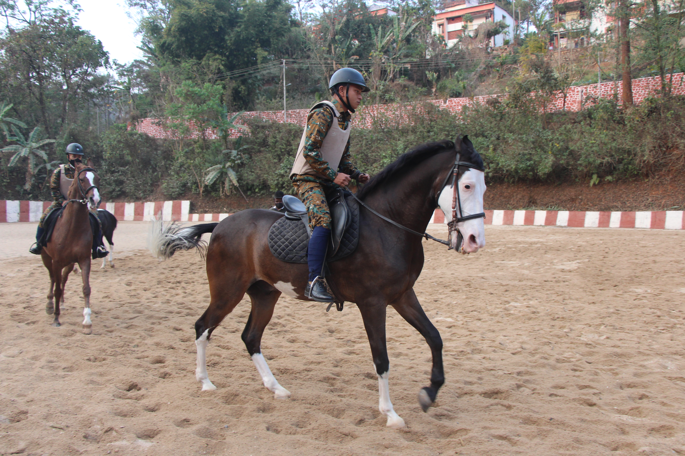
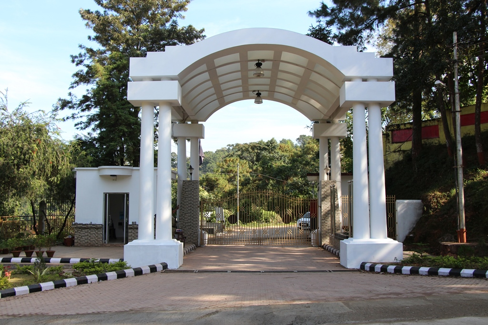
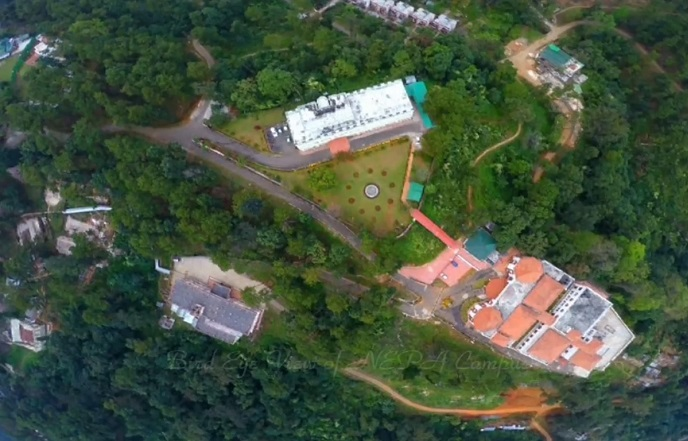

About NEPA
Who we are
The North Eastern Police Academy (erstwhile the Regional Police Training College) is an establishment of the Government of India under the Ministry of Home Affairs.
It is situated in Ri-Bhoi District of Meghalaya and started functioning in July 1978. The Academy is engaged in shaping police officers for equitable, effective and sensitive policing.
It is dedicated to teaching the police personnel of North Eastern States and from across the country to safeguard the value of freedom – freedom from disorder, criminal acts and criminals.

NEPA at a glance
- Parent body
- Ministry of Home Affairs, Government of India
- Earlier name
- Regional Police Training College
- Functioning since
- July 1978
- Campus area
- 205 acres
- Height above sea level
- 976 metres (3500 ft)
- District
- Ri-Bhoi, Meghalaya
Objectives
To impart one year basic training to the directly recruited Police Officers of the rank of Sub Inspector and Deputy Superintendent of Police of North East States.
Design and offer a number of different types of in-service training programmes for Police personnel of all states of India.
Design and offer courses which will bring Police Officers in close contact with Officers of other Departments like Judiciary, Armed Forces, CAPF, Prison Department, Customs and Excise, etc.

Location
The Academy is located at Umsaw Village under the Ri-Bhoi District of Meghalaya.
- 20 kmfrom Shillong, the capital of Meghalaya (towards the north)
- 83 kmsouth of Guwahati on the Shillong–Guwahati National Highway
- 12 kmwest of Umroi Airport
- 100 yardsfrom Umsaw Dyke on the main G S road, the entry point to the Academy


The entry point towards the Academy is from the main G S road, popularly known as Umsaw Dyke. The Academy is situated just about 100 yards from the Dyke. It has a beautiful sprawling campus spreading over an area of 205 acres of land and is located at a height of 976 metres (3500 ft).